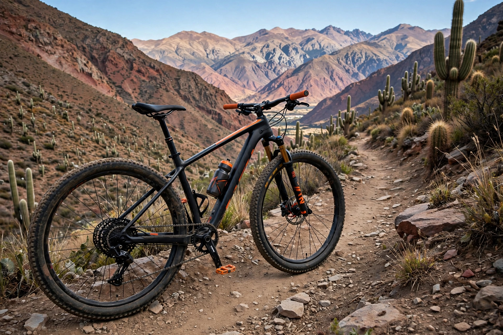

Bicicleta Mountain Bike
La Mountain Bike es una bicicleta diseñada para realizar paseos, hacer ejercicios y recorrer diferentes tipos de caminos, es una bicicleta resistente, comoda y facil de utilizar.

Caracteristicas principales
- Cuadro resistente.
- Suspension delantera.
- Frenos a disco.
- 21 velocidades.
- Asiento comodos.
Especificaciones tecnicas
- Tipo: Mountain Bike.
- Rodado: 29 pulgadas.
- Material del cuadro: Aluminio.
- Cantidad de velocidades: 21.
- Suspension: Delantera.
Ventajas
- Es resistente y duradera.
- Permite realizar actividad fisica.
- Es comoda para hacer paseos largos.
- No utiliza combustible.
Informacion comercial
El precio de la bicicleta puede variar según la marca, modelo y características específicas.
Se puede adquirir en tiendas de bicicletas y comercios especializados.
Informacion complementaria
Se recomienda utilizar casco y revisar periodicamente los frenos y la cadena